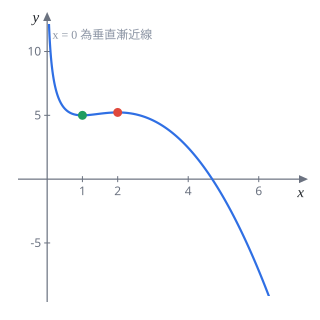
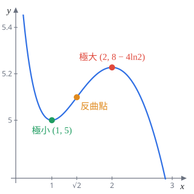
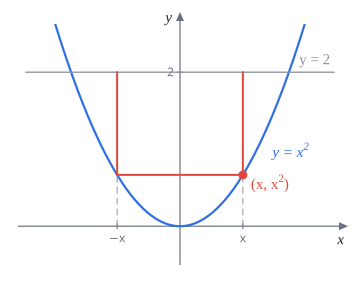

110 學年第 1 學期 微積分 1 期中考
模組 17–19 班，官方解答改寫成詳解
這份官方解答逐題驗算過，沒有發現錯誤。每題下方灰字是對應的主題複習路線段號和講義小節。這份考卷第 1 題明訂不能用羅必達，和講義的規定一致，整份都在講義範圍內。
第 1 題 求極限，不可用羅必達（20 分）
可以直接使用：$\displaystyle\lim_{x\to0}\frac{\sin x}{x}=1$，$\displaystyle\lim_{x\to\pm\infty}\left(1+\frac1x\right)^x=e$，$\displaystyle\lim_{x\to1}\frac{\ln x}{x-1}=1$。
1(a)$\displaystyle\lim_{x\to\infty}\frac{3^x+e^x}{1+2^{2x}}$（5 分）
主題 5 無窮極限與漸近線｜§2.5（類似講義週二題 36）
考點：指數函數比大小，底數大的跑得快。$2^{2x}=4^x$，四個底數 $1,3,e,4$ 中 $4$ 最大，分子分母同除 $4^x$。
$$\frac{3^x+e^x}{1+4^x}=\frac{\left(\frac34\right)^x+\left(\frac e4\right)^x}{\left(\frac14\right)^x+1}\;\longrightarrow\;\frac{0+0}{0+1}$$底數小於 $1$ 的指數在 $x\to\infty$ 時趨近 $0$。
$0$
官方是同除 $3^x$，分母變成 $\left(\frac13\right)^x+\left(\frac43\right)^x\to\infty$，也能得 $0$。同除最大的 $4^x$ 每一項都有極限，比較不會出錯。
1(b)$\displaystyle\lim_{x\to0}\frac{1-\cos(2x)}{\sqrt{x^2+4}-2}$（5 分）
主題 4 算極限的技巧｜§2.3 有理化 §2.4 三角極限
考點：$\frac00$ 型。分母有根號差，有理化；分子用倍角公式 $1-\cos2x=2\sin^2x$，湊出 $\frac{\sin x}{x}$。
分母有理化（$(\sqrt{x^2+4})^2-4=x^2$）：
$$\frac{1-\cos2x}{\sqrt{x^2+4}-2}=\frac{(1-\cos2x)(\sqrt{x^2+4}+2)}{x^2}=2\left(\frac{\sin x}{x}\right)^2\left(\sqrt{x^2+4}+2\right)$$$x\to0$：$2\cdot1\cdot(2+2)$。
$8$
1(c)$\displaystyle\lim_{x\to\frac\pi2}\frac{\ln(\sin^2x)}{\cos^2x}$（5 分）
考點：$\frac00$ 型。題目給了 $\frac{\ln t}{t-1}\to1$，目標是把式子換成這個樣子。分子只有 $\sin^2x$，所以分母也用 $\cos^2x=1-\sin^2x$ 換掉。
$$\frac{\ln(\sin^2x)}{\cos^2x}=\frac{\ln(\sin^2x)}{1-\sin^2x}=-\frac{\ln(\sin^2x)}{\sin^2x-1}$$令 $t=\sin^2x$，$x\to\frac\pi2$ 時 $t\to1$：
$$-\lim_{t\to1}\frac{\ln t}{t-1}=-1$$$-1$
常見錯誤是漏掉負號：分母是 $1-t$，不是 $t-1$。
1(d)$\displaystyle\lim_{x\to\infty}\left(\frac{x+1}{x-1}\right)^x$（5 分）
主題 11 $e$ 的極限｜§5.4
考點：底 $\to1$、指數 $\to\infty$，$1^\infty$ 型。把底寫成 $1+\frac{1}{\square}$，指數湊成 $\square$ 的倍數。
$\dfrac{x+1}{x-1}=1+\dfrac{2}{x-1}$。令 $y=\dfrac{x-1}2$，則 $x=2y+1$，$x\to\infty$ 時 $y\to\infty$：
$$\left(1+\frac1y\right)^{2y+1}=\left[\left(1+\frac1y\right)^y\right]^2\cdot\left(1+\frac1y\right)\;\longrightarrow\;e^2\cdot1$$$e^2$
更快的做法分子分母同除 $x$：
$$\left(\frac{x+1}{x-1}\right)^x=\frac{\left(1+\frac1x\right)^x}{\left(1-\frac1x\right)^x}\;\longrightarrow\;\frac{e}{e^{-1}}=e^2$$分母用的是推廣公式 $\left(1+\frac ax\right)^{bx}\to e^{ab}$，$a=-1$、$b=1$。
第 2 題 求導數（20 分）
2(a)$f(x)=x^3e^{x^2+2}$，求 $f'(x)$ 與 $f''(x)$。（8 分）
考點：乘法法則加連鎖律。$(e^{x^2+2})'=e^{x^2+2}\cdot2x$。算二階時先把 $f'$ 整理成「多項式 $\times\,e^{x^2+2}$」，再微一次會輕鬆很多。
$$f'(x)=3x^2e^{x^2+2}+x^3\cdot2xe^{x^2+2}=(2x^4+3x^2)e^{x^2+2}$$對 $f'$ 再用一次乘法法則：
$$f''(x)=(8x^3+6x)e^{x^2+2}+(2x^4+3x^2)\cdot2xe^{x^2+2}=(4x^5+14x^3+6x)e^{x^2+2}$$$f'(x)=(2x^4+3x^2)e^{x^2+2}$，$f''(x)=(4x^5+14x^3+6x)e^{x^2+2}$
官方給分 $f'$ 5 分、$f''$ 3 分。導數公式記錯扣 3 分，計算錯誤扣 1 分。
2(b)$g(x)=\dfrac{x}{\tan^{-1}(\sin x)}$，求 $g'(x)$。（6 分）
主題 8 商法則｜§4.5 主題 10 反三角導數｜§5.2
考點：商法則，分母的導數要用連鎖律：$\bigl(\tan^{-1}(\sin x)\bigr)'=\dfrac{1}{1+\sin^2x}\cdot\cos x$。
$$g'(x)=\frac{1\cdot\tan^{-1}(\sin x)-x\cdot\dfrac{\cos x}{1+\sin^2x}}{\bigl(\tan^{-1}(\sin x)\bigr)^2}$$如上
商法則是「下微上減上微下」，順序反了正負號就錯。
2(c)$h(x)=x^x\cdot(1+x^2)^{1/x}$，求 $h'(1)$。（6 分）
主題 11 對數微分｜§5.4.1
考點：兩個「變數的變數次方」相乘，取 $\ln$ 一次處理掉。只要 $h'(1)$，求完導數立刻代 $x=1$，不用化簡。
$$\ln h(x)=x\ln x+\frac{\ln(1+x^2)}{x}$$兩邊微分，第二項用商法則：
$$\frac{h'(x)}{h(x)}=\ln x+1+\frac{\frac{2x}{1+x^2}\cdot x-\ln(1+x^2)}{x^2}=\ln x+1+\frac{2}{1+x^2}-\frac{\ln(1+x^2)}{x^2}$$代 $x=1$：$h(1)=1\cdot2=2$，
$$h'(1)=2\,(0+1+1-\ln2)$$$h'(1)=4-2\ln2$
常見錯誤是最後忘了乘 $h(1)$，只寫 $2-\ln2$。
第 3 題 隱函數與線性近似（12 分）
方程式 $x^2+y^2=(2x^2+2y^2-x)^2$ 在 $\left(0,\frac12\right)$ 附近定義隱函數 $y=y(x)$。
3(a)求 $\left.\dfrac{dy}{dx}\right|_{(0,\frac12)}$。（7 分）
主題 10 隱微分｜§5.1
考點：隱微分。右邊是平方，用連鎖律「外層微分乘內層微分」，不要先展開。
$$2x+2y\,y'=2(2x^2+2y^2-x)\cdot(4x+4y\,y'-1)$$代入 $(0,\frac12)$：$2x^2+2y^2-x=\frac12$，$4x+4yy'-1=2y'-1$，左邊是 $y'$：
$$y'=2\cdot\frac12\cdot(2y'-1)=2y'-1\;\Longrightarrow\;y'=1$$$\left.\dfrac{dy}{dx}\right|_{(0,\frac12)}=1$
官方給分：隱微分正確 4 分、代點 2 分、解出 1 分。先驗證點在曲線上：左邊 $\frac14$，右邊 $\left(\frac12\right)^2=\frac14$。
3(b)用 $y(x)$ 在 $x=0$ 的線性逼近估計 $y(0.1)$。（5 分）
主題 12 線性近似｜§6.1
$y(0.1)\approx0.6$
第 4 題 反函數的導數（10 分）
$f(x)=4\tan^{-1}(x^3)+e^x$
4(a)說明 $f$ 的反函數存在。（4 分）
考點：嚴格遞增就是一對一，一對一就有反函數。用 $f'\gt0$ 證明嚴格遞增。
$$f'(x)=4\cdot\frac{1}{1+(x^3)^2}\cdot3x^2+e^x=\frac{12x^2}{1+x^6}+e^x$$第一項 $\ge0$，$e^x\gt0$，所以 $f'(x)\gt0$。$f$ 在 $\mathbb R$ 上嚴格遞增，因此一對一，反函數存在。
$f'\gt0$，$f$ 嚴格遞增，反函數存在
官方給分：$f'$ 2 分、寫出 $f'\gt0$ 1 分、說明嚴格遞增 1 分。
4(b)$g$ 是 $f$ 的反函數，求 $g'(\pi+e)$。（6 分）
主題 10 反函數定理｜§5.5
考點：反函數定理 $g'(b)=\frac{1}{f'(a)}$，$f(a)=b$。關鍵是猜出 $a$：$\pi$ 要從 $4\tan^{-1}(\cdot)$ 來，需要 $\tan^{-1}(x^3)=\frac\pi4$，也就是 $x^3=1$；剛好 $e^1=e$。
$f(1)=4\cdot\frac\pi4+e=\pi+e$（1 分），$f'(1)=\frac{12}{2}+e=6+e$（2 分）。
$$g'(\pi+e)=\frac{1}{f'(1)}$$$g'(\pi+e)=\dfrac{1}{6+e}$
第 5 題 唯一解的證明（6 分）
5證明 $x=0$ 是方程式 $x+\cos^{-1}x=\dfrac\pi2$ 的唯一解。
主題 13 均值定理與增減｜§6.2 §6.3（和講義週六題 3–5 同型）
考點：證明題。「是解」直接代；「唯一」用 Rolle 定理反證，或用導數說明函數單調。
令 $F(x)=x+\cos^{-1}x$，定義域 $[-1,1]$。$F(0)=0+\frac\pi2$，所以 $x=0$ 是解。
對 $-1\lt x\lt1$：
$$F'(x)=1-\frac{1}{\sqrt{1-x^2}}$$因為 $0\lt\sqrt{1-x^2}\le1$，$\frac{1}{\sqrt{1-x^2}}\ge1$，所以 $F'(x)\le0$，而且只有 $x=0$ 時等於 $0$。
關鍵一步（Rolle 反證）：假設還有另一解 $\alpha\neq0$，則 $F(\alpha)=F(0)$。$F$ 在 $0$ 與 $\alpha$ 之間的閉區間連續（$\cos^{-1}$ 在 $[-1,1]$ 連續），在開區間可微，由 Rolle 定理，存在 $c$ 嚴格介於 $0$ 與 $\alpha$ 之間使 $F'(c)=0$。但 $F'(c)=0$ 只會在 $c=0$ 發生，而 $c$ 不能等於端點 $0$，矛盾。
所以 $x=0$ 是唯一解 ■
官方給分：正確引用 Rolle／均值定理／其推論 2 分、$\cos^{-1}x$ 的導數 2 分、完整論證 2 分。
常見失分：(1) $(\cos^{-1}x)'$ 少了負號，寫成 $\frac{1}{\sqrt{1-x^2}}$；(2) 只說「$F'\le0$ 所以遞減」，但 $F'$ 在 $0$ 等於 $0$，要說清楚為什麼還是嚴格遞減；(3) 用 Rolle 時沒強調 $c$ 嚴格在區間內部，那正是和 $c=0$ 矛盾的原因。
另解$F'\lt0$ 在 $(-1,0)$ 和 $(0,1)$ 上成立，所以 $F$ 在 $[-1,0]$ 和 $[0,1]$ 上各自嚴格遞減，兩段在 $x=0$ 接起來，整個 $[-1,1]$ 嚴格遞減，水平線 $y=\frac\pi2$ 最多碰一次。
第 6 題 函數作圖（20 分）
$f(x)=6x-x^2-4\ln x$
6(a)寫出定義域。（1 分）
主題 1 定義域｜§1.2.1
$\ln x$ 要求 $x\gt0$。
$(0,\infty)$
6(b)求 $f'(x)$，寫出遞增、遞減區間。（4 分）
主題 13 增減｜§6.3.2
考點：通分後因式分解，在定義域 $x\gt0$ 內列符號表。
$$f'(x)=6-2x-\frac4x=\frac{-2x^2+6x-4}{x}=\frac{-2(x-1)(x-2)}{x}$$$x\gt0$ 時分母為正，正負由 $-(x-1)(x-2)$ 決定：兩根之間為正，兩根之外為負。
遞增 $(1,2)$；遞減 $(0,1)$、$(2,\infty)$
6(c)求 $f''(x)$，判斷凹性。（4 分）
主題 15 凹性｜§7.2
$x\gt0$ 時 $x+\sqrt2\gt0$，正負由 $-(x-\sqrt2)$ 決定。
凹口向上 $(0,\sqrt2)$；凹口向下 $(\sqrt2,\infty)$
6(d)寫出所有局部極值與反曲點。（4 分）
$x=1$：$f'$ 由負變正，局部極小，$f(1)=6-1-0=5$。
$x=2$：$f'$ 由正變負，局部極大，$f(2)=12-4-4\ln2=8-4\ln2\approx5.23$。
$x=\sqrt2$：凹向改變，$f(\sqrt2)=6\sqrt2-2-4\ln\sqrt2=6\sqrt2-2-2\ln2\approx5.10$。
局部極小 $(1,5)$；局部極大 $(2,8-4\ln2)$；反曲點 $\left(\sqrt2,\,6\sqrt2-2-2\ln2\right)$
可以用 (c) 交叉檢查：$f''(1)=2\gt0$ 是極小，$f''(2)=-1\lt0$ 是極大，和一階導數判斷一致。
6(e)找出所有漸近線。（2 分）
垂直：$x\to0^+$ 時 $-4\ln x\to+\infty$，其餘項 $\to0$，所以 $f\to+\infty$，$x=0$ 是垂直漸近線。
水平：$x\to\infty$ 時 $-x^2$ 主導，$f\to-\infty$，沒有。
斜：$\frac{f(x)}{x}=6-x-\frac{4\ln x}{x}\to-\infty$，斜率不是有限值，沒有。
只有垂直漸近線 $x=0$
6(f)畫出 $y=f(x)$。（5 分）
主題 16 函數作圖｜§7.3
考點：把 (b)–(e) 畫在一起。這題的極小 $5$ 和極大 $5.23$ 很接近，照比例畫會看不出來，作答時可以把 $y$ 方向誇張一點，但順序要對：先降到 $(1,5)$，升到 $(2,5.23)$，再一路下降。


官方給分：圖要和前面的答案一致，每一項沒標或不一致扣 1 分。
第 7 題 最大長方形（12 分）
7在拋物線 $y=x^2$ 內側、水平線 $y=2$ 下方畫一個長方形，頂邊落在 $y=2$ 上。求長方形的最大面積。
主題 14 極值｜§7.1 閉區間上的最大最小值（應用題情境講義沒有，數學工具在範圍內）
考點：最佳化應用題。先用一個變數把面積寫出來，再在閉區間上求最大值。

設右下角是 $(x,x^2)$，$0\le x\le\sqrt2$。對稱性讓寬是 $2x$，高是 $2-x^2$（4 分）：
$$A(x)=2x(2-x^2)=4x-2x^3$$微分（2 分）並令為 $0$（2 分）：
$$A'(x)=4-6x^2=0\;\Longrightarrow\;x=\sqrt{\tfrac23}=\frac{\sqrt6}{3}\quad(\text{負根不合})$$驗證是最大（3 分），擇一：$A''(x)=-12x\lt0$；或 $A'$ 在 $x\lt\frac{\sqrt6}3$ 為正、之後為負；或比端點 $A(0)=A(\sqrt2)=0$。
$$A\left(\frac{\sqrt6}3\right)=2\cdot\frac{\sqrt6}{3}\cdot\left(2-\frac23\right)=\frac{2\sqrt6}{3}\cdot\frac43=\frac{8\sqrt6}{9}$$最大面積 $\dfrac{8\sqrt6}{9}\approx2.18$（1 分）
常見失分：寬寫成 $x$（忘了左右對稱，答案少一半）；或求出臨界點後沒說明為什麼是最大。